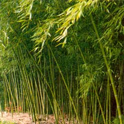

The Bamboo Fence: Beauty Meets Strength
By the Mother Earth News editors
August/September 2000
Nothing embodies beauty, simplicity and strength like a bamboo fence. In Japan bamboo fencebuilding is an art form. Yet you don't have to be an artist, or even particularly handy, to construct this basic picket design derived from Japanese tea garden fences. It is a pleasure both to build and to behold.
What Poles?
If you're new to bamboo growing, you'll need to purchase poles from a retailer to make your fence. Either that, or wait a few years until your plantings are ready to harvest. A new planting of bamboo may produce canes of useful size in three to four years, but these canes need to mature for another three years before being harvested for poles. A final option is to harvest poles (with permission, of course) from an established grove in your area.
What Design?
You can build a simple picket fence entirely of bamboo, or you can combine it with standard lumber. You can wire bamboo pickets to a chain link fence or to bamboo stringers attached to peeler pole posts, as described here.
Bamboo pickets can be arranged on the fence in many ways. The tops, neatly cut just above the node, can be arranged in a straight line or in a random, ragged pattern. The pickets can be hung on one or both sides of a bamboo stringer (stringers are the horizontal supports of a fence; see diagram). Pickets can also be arranged in a repeating pattern, such as two together, then a space, then one, then a space, then two, and so on. Or they can be alternated with cedar boards.
Choosing and Attaching the Pickets
Take a bamboo pole and look at it closely. Now turn it 90 degrees. If it was straight before, it likely is zigzag now. This has to do with the way bamboo branches grow.
Bamboo branches arise alternately at each branched node of a culm, but all branches lie in the same plane. If the lowest branch is on the right side, then the next branch is on the left side and the third on the right, and so on. The culm bends slightly away from the base of the branches; thus a bamboo pole will be straight in the unbranched plane and slightly bent in the branched plane.
To make the fence shown here, set the poles with the straight plane facing the observer.
In traditional Japanese fences, bamboo pickets are attached with string because the poles of most hardy bamboos split when nailed. At Bamboo Hardwoods, Inc., where I work, we've found that galvanized wire is easier, stronger and lasts longer than string. For aesthetics, some people cover the wire with thick black string. Others use black plastic-coated telephone wire. If you decide to use string instead of wire, note that natural fibers rot and lose their strength very quickly. Artificial fibers such as those found in fishermen's seining twine hold up well and are very strong. Recently we discovered that the black plastic cable ties sold in hardware stores make quick and ready fasteners. The black color looks good, if a bit shiny when new.
Our favorite bamboo is Tam Vong (Dendrocalamus strictus). We call it "solid bamboo," and it is indeed solid at the bottom of the pole, while toward the top its walls are very thick and the hollow small. Native to India and Vietnam, Tam Vong will not split and can be drilled and nailed like 2x4s.
Use a nail gun to attach Tam Vong pickets to a stringer. Or predrill and screw or nail. If you prefer, you can also cable tie or wire Tam Vong like ordinary poles.
Bamboo Hardwoods ( www.bamboohardwoods.com ) carries Tam Vong in sizes from 1" x 6' to 2" x 20'. We build our furniture, parts of our houses and most of our fences from Tam Vong at our factory in Vietnam.
What Steps?
1. Gather materials.
• Posts: use natural posts with the bark peeled off, 4 x 4s or peeler poles, treated. (A peeler pole is the core that is left after ply veneer has been peeled off a log, commonly Douglas fir.)
• Stringers: use 1 1/2" diameter, 10'- long bamboo poles or 2 x 4s
• Pickets: use 1"-diameter bamboo poles
• Fasteners: for options, see "Attaching the Pickets" above
• Concrete
2. Stain posts dark brown (traditional Japanese posts are darkened with fire).
3. Set posts in concrete.
4. Drill holes for stringers in outside posts.
5. Set ends of stringers into holes of outside posts. Rotate stringer so straightest plane faces viewer. Pretrial: nail or screw middle of stringers to inside posts.
6. Cut the top of each picket just above a node where the pole is solid so the picket is closed to water. Cut this way, the picket will last longer and look professional. If you cut the picket at the internode where the pole is hollow, you create a cup that will fill up with water and rot the pole. Cut the bottoms of pickets.
7. Attach the pickets to the stringers. Be sure the straightest plane faces the viewer. Use either cable ties (zip ties), wire, string or wire plus string to attach the pickets. If using Tam Vong pickets and stringers, you can use a nail gun.
Tools:
• paint brush (for staining posts)
• post hole digger, level, wheel barrow, shovel (for setting posts)
• chop saw or hand saw (for cutting bamboo)
• plyers/wire cutters (to cut and twist wire around bamboo)
• scissors (for cutting string or cable ties)
• pin nail gun (for attaching pickets to stringers if using Tam Vong bamboo)
- Daphne Lewis
|
 |
 |
|